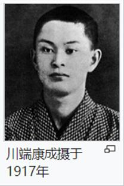
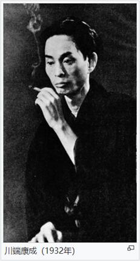
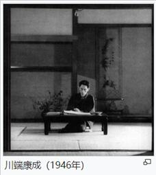
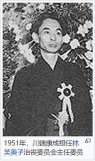

川端康成（日语：川端 康成／かわばた やすなり Kawabata Yasunari ，1899年6月14日－1972年4月16日），世界知名的日本新感觉派作家，文学批评家，活跃于大正至昭和年间。1968年成为首位日本人诺贝尔文学奖得主，也是继罗宾德拉纳特·泰戈尔之后第2位获奖的亚洲作家。
川端康成出生于大阪府，毕业于东京帝国大学日本文学系。大学时因受菊池宽赏识于文学批评等领域崭露头角，之后与横光利一等人共同创办了同人志《文艺时代》。他结合西欧的前卫文学创作出了被称为新感觉文学的作品，并作为“新感觉派”作家而受到关注。他的作品类型多样，手法、风格各异，包括诗、抒情文章、神秘主义作品、少女小说等等，因此也被人称为魔术师。此后，他又创作了诸如在死亡和轮回中表现“日本之美”的作品，融合了连歌和前卫的作品等等。这些作品表现了他对传统美，魔界等主题的关注。他对人性的丑恶与无情，人心的孤独与绝望理解得十分透彻。他在日本文学史上留下了许多辉煌灿烂的名著，这些名著奠定了其作为日本文学最高峰的不可动摇的地位。作为第一个获得诺贝尔文学奖的日本人，他在获奖演讲中向世界介绍了日本人的生死观和美学意识。
1972年4月16日，川端康成突然采取口含煤气管的自杀方式离开了人世，未留下纸质遗书。他早在1962年就说过：“自杀而无遗书，是最好不过的了。无言的死，就是无限的活。”
   
《美丽！》约8,000字短篇小说，1927年4月至5月分四期在《福冈日日新闻》（现《西日本新闻》）刊登
《感情装饰》（感情装飾、1926年）
《伊豆舞娘》（伊豆の踊子、1927年）
《浅草红团》（浅草紅団、1930年）
《化妆与口笛》（化粧と口笛、1933年）
《水晶幻想》（水晶幻想、1934年）
《抒情歌》（抒情歌、1934年）
《禽獣》（禽獣、1935年）
《纯粹的声》（純粋の声、1936年）
《花的华尔滋（圆舞曲）》（花のワルツ、1936年）
《雪国》（雪国、1937年）
《少女的心》（むすめごころ、1937年）
《女性开眼》（女性開眼、1937年）
《班长的侦探》（級長の探偵、1937年）
《少女港》（乙女の港、1938年）
《睡颜》（寝顔、1941年）
《爱的人们》（愛する人達、1941年）
《文章》（文章、1942年）
《美丽的旅行》（美しい旅、1942年）
《高原》（高原、1942年）
《朝云》（朝雲、1945年）
《爱》（愛、1945年）
《驹鸟温泉》（駒鳥温泉、1945年）
《日雀》（日雀、1946年）
《晚霞少女》（夕映少女、1946年）
《温泉宿》（温泉宿、1946年）
《虹》（虹、1947年）
《一草一花》（一草一花、1948年）
《我的伊豆》（私の伊豆、1948年）
《哀愁》（哀愁、1949年）
《新文章读本》（新文章読本、1950年）
《舞姫》（舞姫、1951年）
《千羽鹤》（千羽鶴、1952年）
《再婚者》（再婚者、1953年）
《日月》（日も月も、1953年）
《河边小镇的故事》（川のある下町の話、1954年）
《山音》（山の音、1954年）
《吴清源棋谈・名人》（呉清源棋談・名人、1954年）
《童谣》（童謡、1954年）
《伊豆之旅》（伊豆の旅、1954年）
《东京的人》（東京の人、1955年）
《湖》（みづうみ、1955年）
《燕之童女》（燕の童女、1955年）
《生为女人》（女であること、1955・56年）
《富士的初雪》（富士の初雪、1958年）
《有风的未知》（風のある未知、1959年）
《睡中的美女》（眠れる美女、1961年）
《古都》（古都、1962年）
《爱与哀愁》（美しさと哀しみと、1965年）
《只手》（片腕、1965年）
《落花流水》（落花流水、1966年）
《月下之门》（月下の門、1967年）
《美的存在与发现》（美の存在と発見、1969年）
《ある人の生のなかに》（ある人の生のなかに、1972年）
《蒲公英》（たんぽぽ、1972年）
《竹声桃花》（竹の声桃の花、1973年）
《日本的美的中心》（日本の美のこころ、1973年）
作品集链接：https://www.xuges.com/wgwx/zpj/cdkc/index.htm
百度：
https://baike.baidu.com/item/%E5%B7%9D%E7%AB%AF%E5%BA%B7%E6%88%90/458411
搜狗：
https://baike.sogou.com/v75660.htm?fromTitle=%E5%B7%9D%E7%AB%AF%E5%BA%B7%E6%88%90